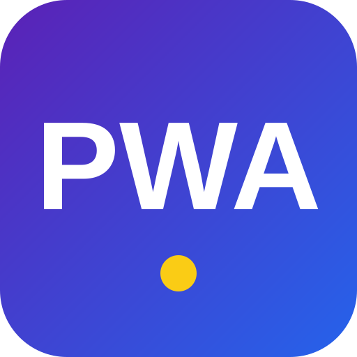

Web App Manifest 是一个 manifest.json 文件，用 <link rel="manifest"> 关联到页面。浏览器读取它，把网页「安装」成桌面/主屏应用，并据此决定图标、启动画面、窗口模式与主题色。

— —
short_name：— · 主题色 —
等待浏览器判定可安装条件…
📋 常用字段
| 字段 | 作用 |
|---|---|
name | 完整应用名（安装弹窗、启动画面） |
short_name | 短名（主屏图标下方，空间有限时显示） |
start_url | 从图标启动时打开的 URL |
scope | 应用受控范围；超出 scope 的链接在浏览器打开 |
display | 窗口模式：standalone（独立窗口，最常用）/ fullscreen / minimal-ui / browser |
theme_color | 标题栏 / 地址栏主题色 |
background_color | 启动画面背景色（资源加载前显示） |
icons | 各尺寸图标；需含 192px 与 512px；purpose:"maskable" 供 Android 自适应裁切 |
orientation | 锁定方向：portrait / landscape |
shortcuts | 长按图标弹出的快捷菜单 |
🔎 实际读取到的 manifest
加载中…
也可在 DevTools → Application → Manifest 查看解析结果与安装性检查。